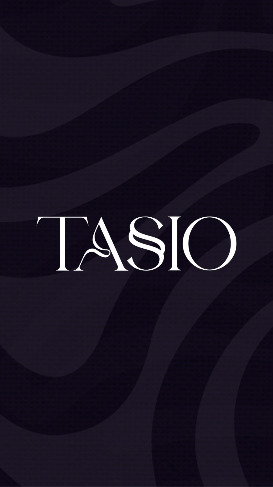
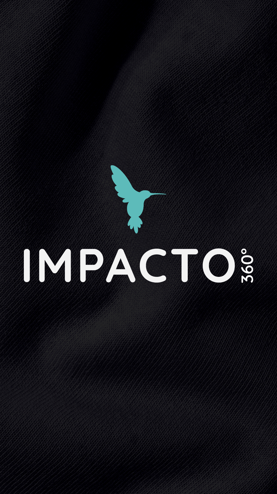
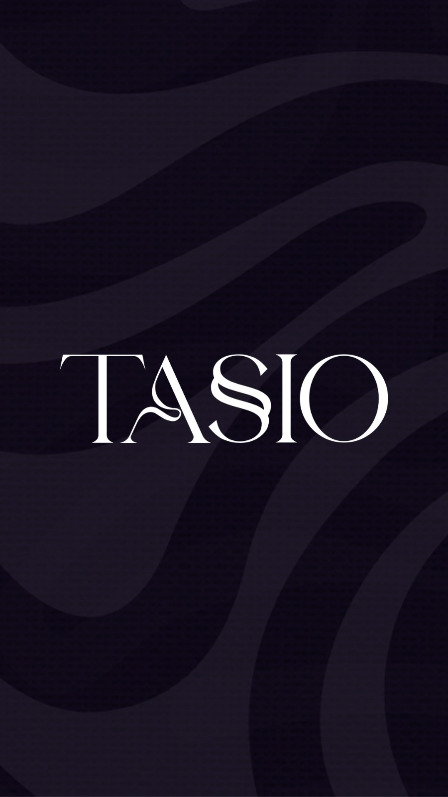
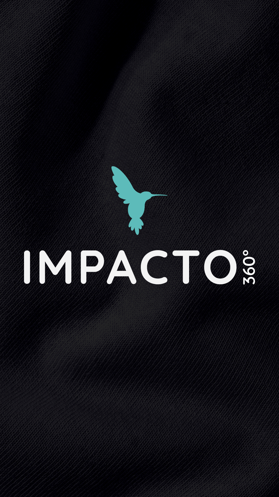
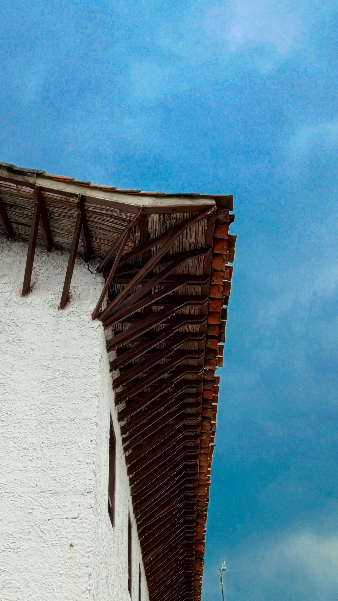
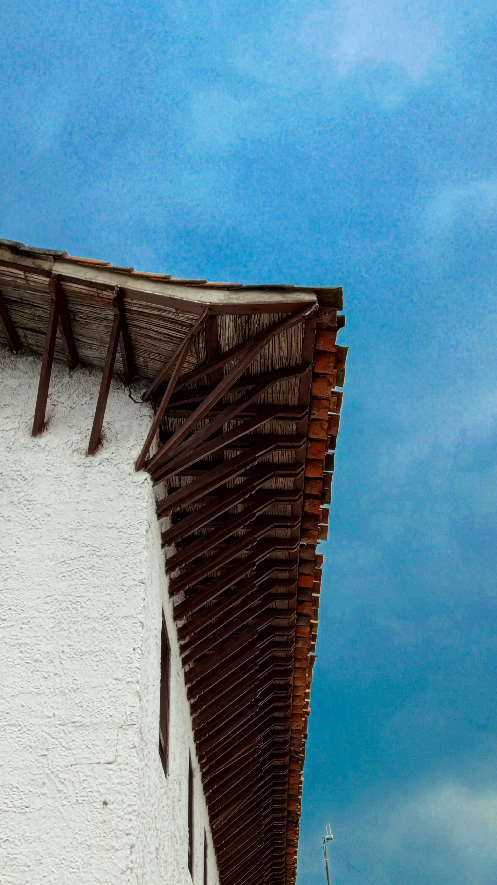
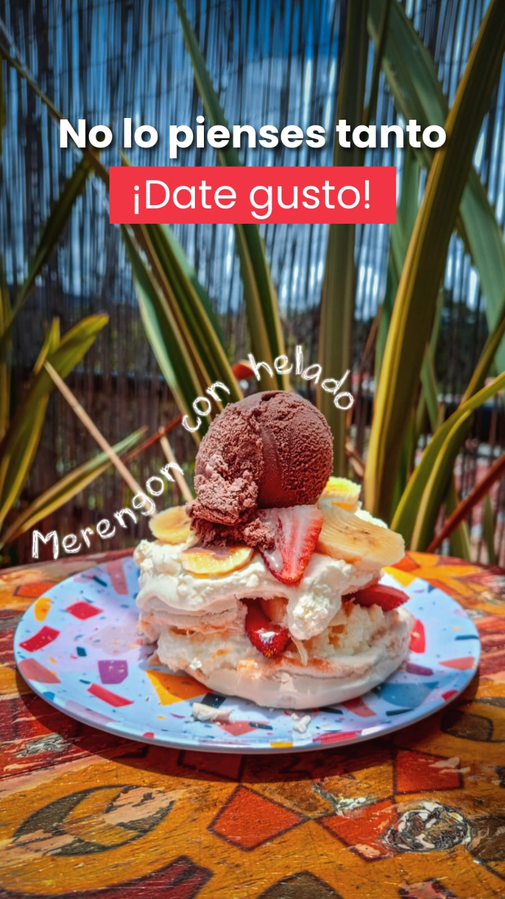
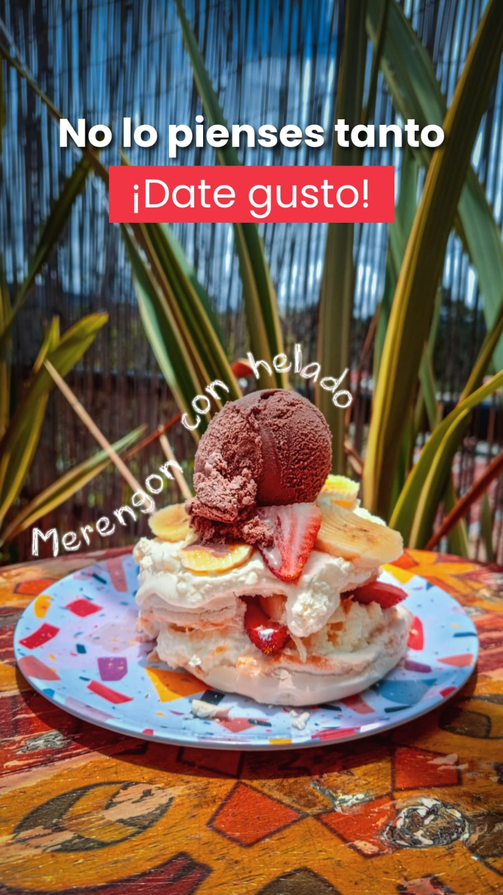

Branding
Cada logo que diseño es una historia hecha forma. Desde la dulzura artesanal de un postre hasta la elegancia de una boda inolvidable. Desde el sabor que despierta los sentidos en un restaurante hasta la estética precisa de un diseñador o el sello único de una estampación: mi trabajo es traducir esencias en identidad visual. No vendo marcas. Cultivo memorias gráficas. Con cada trazo busco emocionar, diferenciar, conectar. Cinco rostros, un mismo pulso creativo: el de dar vida a lo invisible y hacerlo inolvidable.
 



Fotografía
Cada fotografía es una respiración detenida. Una emoción que se niega a desvanecerse. Mi lente no busca solo lo visible, sino lo invisible que vibra en la luz, en las texturas, en el susurro de lo cotidiano. Desde una gota que descansa sobre una hoja, hasta la nostalgia que despierta un auto detenido en el tiempo… todo puede contar una historia cuando se mira con el alma. A través de cada encuadre, dibujo silencios, abrazo memorias y revelo la poesía escondida en lo simple. Mi fotografía no congela el tiempo: lo transforma en emoción.


 


Publicidad
Mi diseño no es solo estética: es narrativa visual. Cada una de mis piezas—desde un dulce artesanal que invita al placer, hasta una boda cargada de emoción, o un plato que abre el apetito desde la mirada—es una invitación a sentir. - 💍 La elegancia y el detalle de las bodas hablan del amor en sus formas más puras, con una paleta de emociones suaves y mensajes íntimos. - 🍰 El merengón y la torta de chocolate despiertan antojos con colores vibrantes y frases que juegan con el deseo, reflejando una gráfica fresca, emocional y cercana. - 🍝 El Strogonoff de pollo y el Tom Yum Kung elevan lo gastronómico, con composiciones equilibradas y textos que guían el paladar desde lo visual. - 🧠 Y detrás de todo, una dirección artística consciente, que alinea identidad, intención y marca. Diseño para emocionar, para que cada cliente vea en su marca una historia bien contada. Mi trabajo une la mirada estratégica con el corazón creativo, convirtiendo ideas en imágenes que no se olvidan. .
 
